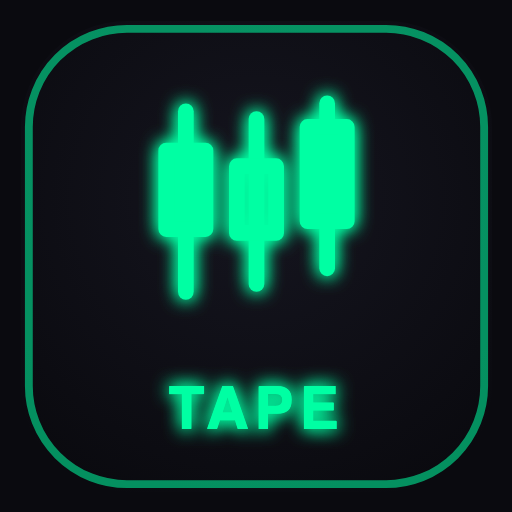
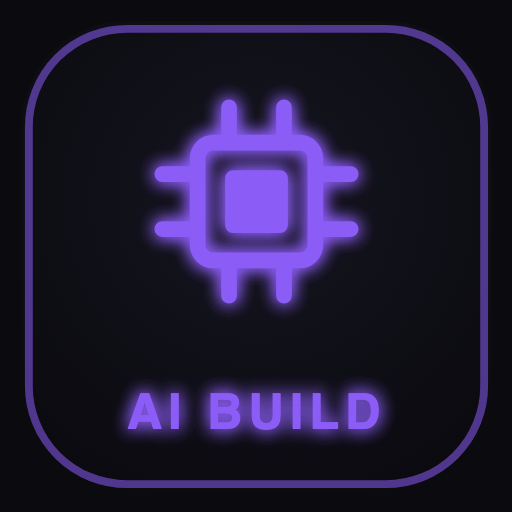
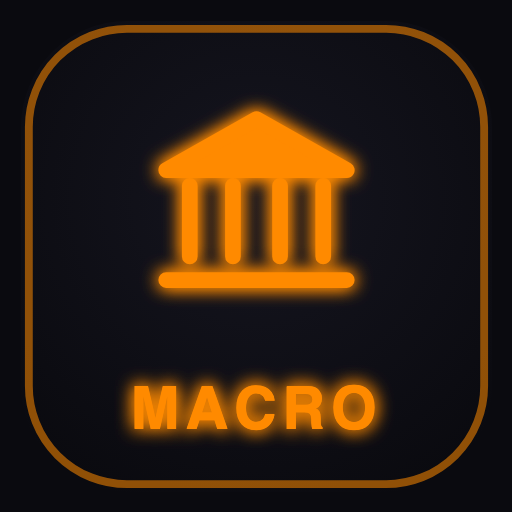
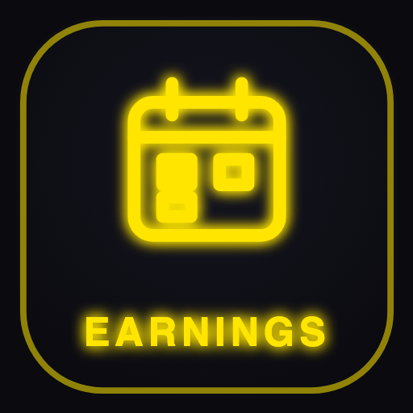
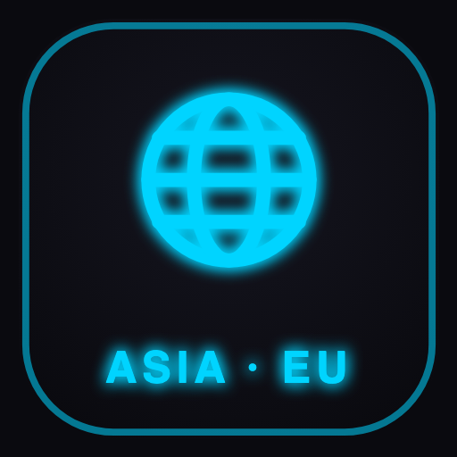
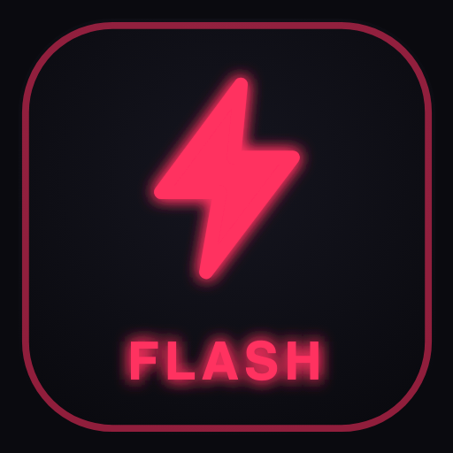
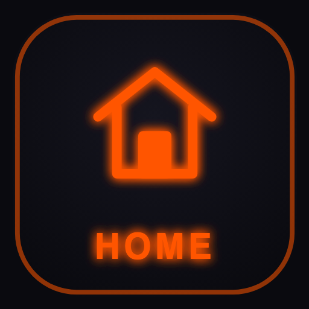
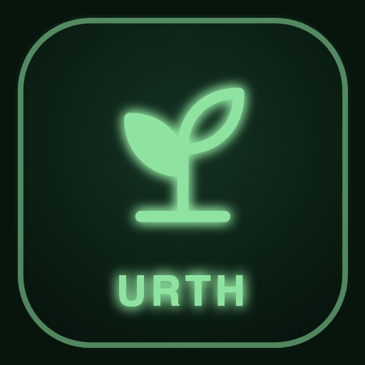

The 26 Nov neon icons, one app per box. URTH is its own app now: nothing from the markets goes in it, and no Urth alert goes anywhere else.

TAPEMovers and waterfalls, big candles, volume spikes, the playbook's level banners, tape readouts and market-wide moves.
AI BUILDThe AI chain: chips, memory, GPU rents, data centres, power, capex, AI demand and AI credit, and your AI names' headlines.
MACROThe Fed, rates and bonds, inflation and jobs, oil and OPEC, the dollar, tariffs and trade, the economic calendar.
EARNINGSEarnings prints and call transcripts, guidance, analyst ratings and price-target changes.
ASIA · EUOvernight sessions, Asia and Europe markets, the yen, gold, silver and metals.
FLASHBreaking headlines: the Situation firehose, and the news that fits no other box.
HOMEThe lights, the Macs and Scintilla's own notices: restarts, a job that had a problem, a sign-in that is needed.
URTHUrth Landscaping only: crew and weather calls, client emails and the Gmail watches.